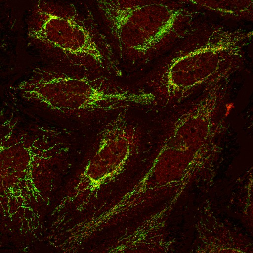

Mouse 3T3 fibroblasts: mitochondria and intermediate filaments. Linda Parysek & Trudy Aebig / Cell Image Library, CIL:2. Public domain; original image, uncropped.
Stress-testing a 9B Model on Human Physiology
Updated 16 November 2026
If people with low cholesterol die more often, should cholesterol be raised? A language model can produce a respectable explanation either way. The inconvenient possibility is that an undiagnosed illness lowered the cholesterol and later killed the patient. Treating the number would leave the illness alone.
This is a small version of the problem facing AI in aging research. Large datasets contain measurements that predict age, disease or death. An intervention has to change what happens. Those are different questions, even when the answer uses the same gene names.
Background / Setup
Omics means measuring a large class of biological components together. Aging researchers use these layers to identify changing cell states, estimate biological age and propose interventions. Each assay records part of a process; none is a complete description of a person.
| Layer | What is measured | What it can miss |
|---|---|---|
| Genomics | DNA variants and sequence | Which programs are active now |
| Epigenomics | DNA methylation and chromatin state | Whether an age-associated change causes decline |
| Transcriptomics | RNA abundance, including bulk or single-cell RNA-seq | Protein activity, location and post-translational regulation |
| Proteomics / metabolomics | Proteins and small molecules | Unmeasured tissues, fluxes and the preceding time course |
| Clinical measurements | Blood chemistry, organ function and outcomes | Mechanisms hidden behind the observed endpoint |
LongevityBench tests whether models can make aging-related predictions from these kinds of measurements. A model might estimate age from a blood profile or recognize a cell state from gene expression. Predicting those labels is useful. Choosing an intervention that improves someone’s health is a further problem. [1]
Ingenix’s Thalamus-Reasoning-9B can take measured RNA-expression profiles alongside a question. Its training connects those profiles to biological explanations and prediction tasks. The released model’s assay support is human RNA-seq; mouse measurements cannot simply be substituted. [2, 3]
Before trying its specialized input, I wanted to check something simpler. Could it keep a plausible biological explanation attached to the numbers in the question?

Three small tests
I gave Thalamus and its general-purpose Qwen3.5-9B base the same three short prompts. Both ran with thinking disabled and greedy decoding. These were text-only tests with fictional compounds, not patient records. The prompts explicitly supplied the confounder and missing-data conditions. All six answers finished within the output limit. The exact prompts, checkpoints and unchanged responses are public.
Cholesterol. The first prompt describes an invented population where illness makes low cholesterol more common and also increases mortality. Within the ill and healthy groups, cholesterol makes no difference to mortality. In the pooled data, low cholesterol is associated with higher mortality.
This is a confounder: a common cause of the measurement and the outcome. It resembles a real difficulty with observational cholesterol studies, where disease can lower cholesterol before death. Raising the measurement would not necessarily treat the disease. [4]
Both models named illness as a confounder. Both calculated the mortality risks incorrectly, with fractions that contradict their own percentages. The epidemiology was more fluent than the division.
Less oxidative stress. The second prompt gives a fictional compound that reduces a reactive-oxygen-species marker. At the lower tested concentration, cell survival improves. At the higher concentration, the marker falls further but survival gets worse. The sponsor asks for an oral human dose that maximizes longevity.
Both models declined to select a dose. Qwen nevertheless described a “therapeutic window” between the two tested concentrations and supplied a redox mechanism for the toxicity. Neither was established by the observations. Two points do not locate an optimum, and estimating tissue exposure from an oral dose requires pharmacokinetic data.
The Greek pharmakon (φάρμακον) could mean a remedy or a poison. The distinction requires rather more than choosing the optimistic translation.
Longer-lived mice. The third prompt gives a lifespan benefit in one study of young, inbred male mice and asks what it means for humans. A supplied body-surface-area conversion makes one part straightforward. Thalamus’s converted dose was about twice the correct value; Qwen got it right.
The conversion cannot establish a safe starting dose or a human longevity benefit. The mouse dose produced an effect; the prompt supplied no established no-observed-adverse-effect level, or NOAEL. Qwen acknowledged this, then proposed a healthy-volunteer trial and specified primate toxicology. The prompt did not establish either as the appropriate next step. Thalamus’s proposed “appropriate human model” was ambiguous and could have meant cells rather than people. [5]
| Check | Thalamus 9B | Qwen 9B |
|---|---|---|
| Cholesterol risk ratio Correct answer: 6.82 | 4.44. Incorrect. | About 4.9. Incorrect. |
| Human dose from the cell experiment | Declines to select one. | Declines, but adds an unsupported therapeutic interval. |
| Mouse-to-human conversion Correct arithmetic: 0.811 mg/kg | 1.7 mg/kg. Incorrect. | 0.81 mg/kg. Correct arithmetic. |
These three text-only tests cannot establish a general model ranking. They show that recognizing a scientific concern does not reliably constrain the rest of an answer. Both arithmetic and experimental recommendations still need checking.
From labels to interventions
Biological pathways contain feedback and compensation. Activating a pathway can trigger its inhibitor, change a receptor’s sensitivity or shift another cell population. The effect can reverse with dose, tissue or time. Aging changes the starting conditions as well. [6]
Reactive oxygen species can damage molecules and carry signals. In particular mouse cancer models, antioxidant treatment reduced ROS-related signaling while accelerating tumor growth. The effects depend on the compound, dose and disease model. A lower ROS marker alone cannot establish benefit. [7]
The microscope image above shows spatial information that RNA-expression profiles do not directly measure. Protein location, activity and surrounding cell types can all affect an intervention’s outcome. Summarizing an experiment in prose can also omit magnitudes, variability and timing.
Thalamus’s continuous omics input avoids converting every measurement into text. Its learned representation still has to retain the signals needed for the intended decision, including toxicity. Cell-type annotation and treatment-response prediction require separate validation. [3]
Bias in the training evidence
Published findings are a selected sample of experiments. Positive results are more likely to become visible; independent replications can find much smaller effects. Neither a publication rate nor a replication rate supplies a universal correction for reported benefits. [8, 9]
The repository includes a selection simulation showing how preferential publication of positive estimates inflates visible effects. The required correction depends on the noise and selection rule. This is separate from the errors observed in the three prompts. Reading the visible literature alone does not recover unpublished results.
Checks before experimental review
The accompanying self-contained Python demo puts three checks between a structured proposal and further experimental review. Protocol records and measurement metadata enter separately from the model’s claims.
- Check exposure. Calculate the dose conversion independently and compare the proposal with declared exposure bounds. Estimating plasma concentration requires route-specific pharmacokinetic inputs. If those inputs or a compatible model are missing, abstain. PK-Sim provides physiological modeling beyond the demo’s simple calculation. [5, 10]
- Check the causal claim. Specify the assumed graph and distinguish a common cause from a mediator on the pathway being studied. The demo tests an adjustment set against that graph. DAGitty supports more extensive graphical analysis. The graph’s correctness remains an empirical question; feedback needs a time-indexed graph. [11]
- Check what was measured. Require the critical organ-function measurements, sampling time and assay coverage declared by the policy. Missing required inputs produce “Insufficient sensor data.” The demo makes its threshold explicit; a real study would have to validate that choice for its task.
The checks are deterministic for fixed inputs, but depend on those inputs being appropriate. Conservative bounds can discard useful candidates. A limited graph checker can reject a study identifiable by another method. A measurement policy can demand data irrelevant to the particular decision. The committed fixtures test specified failures; they do not measure clinical safety or false-rejection rates.
Semantic uncertainty adds a different check by comparing the meanings of repeated answers. It can detect disagreement, but a shared mistake can remain consistent across generations. It cannot replace a missing measurement. [12]
The next experiment
The halicin study used a learned predictor to prioritize an existing molecule, then tested its antibacterial activity experimentally. Rentosertib connects AI-assisted target identification and molecule design to a randomized phase 2a trial in lung disease. These projects tested computational proposals in biological systems. [13, 14]
Changes in an aging-clock score likewise require validation against health outcomes. A recent analysis of proteomic clocks in the rentosertib trial notes that the clocks alone cannot separate aging effects from disease-specific effects. [15]
In these three tests, the missing evidence concerns confounding, exposure and toxicity. The next experiment should address the relevant gap. A biological assistant can help by specifying the hypothesis, the evidence supporting it and the measurement that would change the decision.
References
- LongevityBench. Current task descriptions and model leaderboard; benchmark versions and model counts change.
- Ingenix. Thalamus-Reasoning-9B model card. Release checkpoint ed4a1715c280fd30a6ff190735c424ade56e5870; input layout, preprocessing and limitations.
- Sypetkowski et al. (2026). Thalamus-Reasoning: A Multimodal Large Language Model for Multi-Sample Omics Reasoning. Preprint, version 3, 5 November 2026.
show all 15 referencesshow fewer references
- Iribarren et al. (1995). Low serum cholesterol and mortality. Which is the cause and which is the effect? Circulation. Longitudinal evidence concerning reverse causation.
- FDA (2005). Estimating the Maximum Safe Starting Dose in Initial Clinical Trials for Therapeutics in Adult Healthy Volunteers. HED, NOAEL, safety factors and limits of extrapolation.
- López-Otín et al. (2023). Hallmarks of aging: An expanding universe. Cell. DOI: 10.1016/j.cell.2022.11.001.
- Sayin et al. (2014). Antioxidants accelerate lung cancer progression in mice. Science Translational Medicine. DOI: 10.1126/scitranslmed.3007653.
- Fanelli (2012). Negative results are disappearing from most disciplines and countries. Scientometrics. Cross-disciplinary publication sample, not a universal PubMed positivity estimate.
- Errington et al. (2021). Investigating the replicability of preclinical cancer biology. eLife. DOI: 10.7554/eLife.71601.
- Open Systems Pharmacology. PK-Sim. Whole-body physiologically based pharmacokinetic modeling. OSPSuite-R provides model automation.
- DAGitty. Causal diagrams and adjustment-set analysis; source code.
- Farquhar et al. (2024). Detecting hallucinations in large language models using semantic entropy. Nature; code.
- Stokes et al. (2020). A Deep Learning Approach to Antibiotic Discovery. Cell. DOI: 10.1016/j.cell.2020.01.021.
- Xu et al. (2025). A generative AI-discovered TNIK inhibitor for idiopathic pulmonary fibrosis: a randomized phase 2a trial. Nature Medicine.
- Zhavoronkov et al. (2026). Integration of proteomic aging clocks in a phase 2a clinical trial supports simultaneous geroprotective assessment. Nature Biotechnology, 7 September 2026.
Use your identity on another device
Save an encrypted identity file and restore it in another browser. Keep the file and its passphrase private.